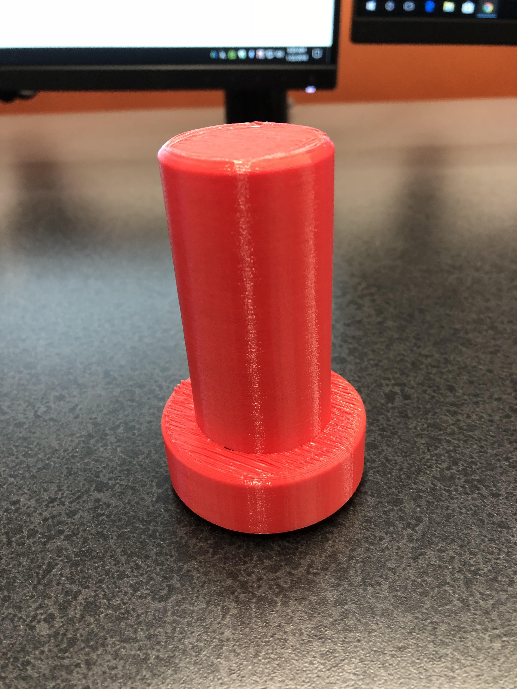
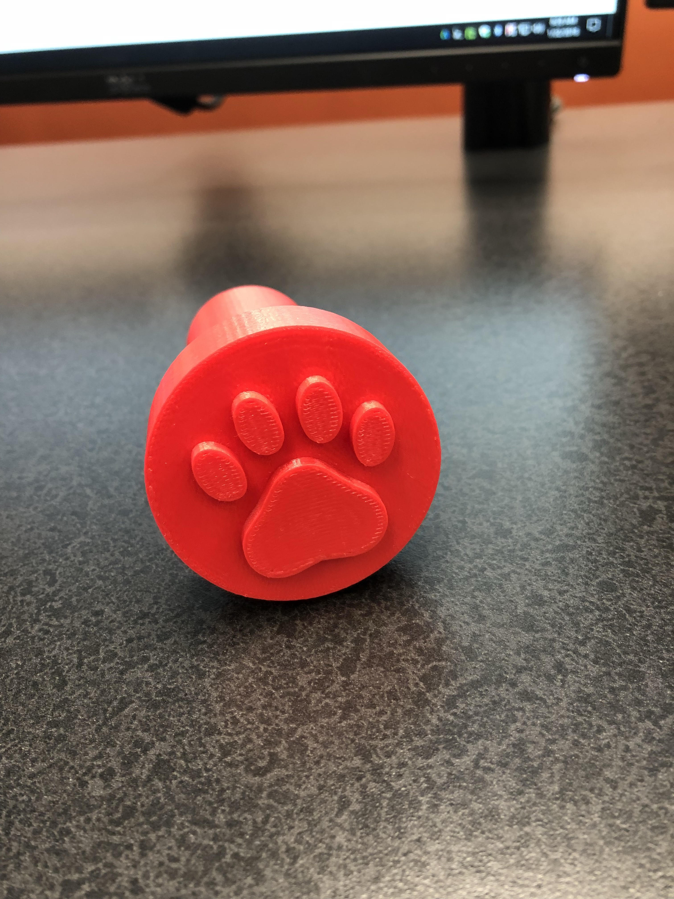

Rotation 2: CAD, Fusion 360 and Design
Project Description:
For my first project, I decided to make a stamp. Since I don't know how to make a stamp or use Fusion 360, I watched several videos which helped me understand how to use the software better. Following the instructions in the video was a straighforward procecss. I decided to do my own stamp design rather than follow the video's design. I started off by inserting a cylinder to create a round base, then I made a taller and skinnier cylinder and placed it a top the round base. For the handle, I chamfered the edges to make it more smoother and comfortable to grip. To personalize my stamp, I decided to sketch a paw print, which I find not difficult to do. I used the line, ellipse, and circle sketch tools to create my design. When my stamp was done 3D printing, it turned out to be larger than I expected, nontheless, I'm satisfied with the end result.

